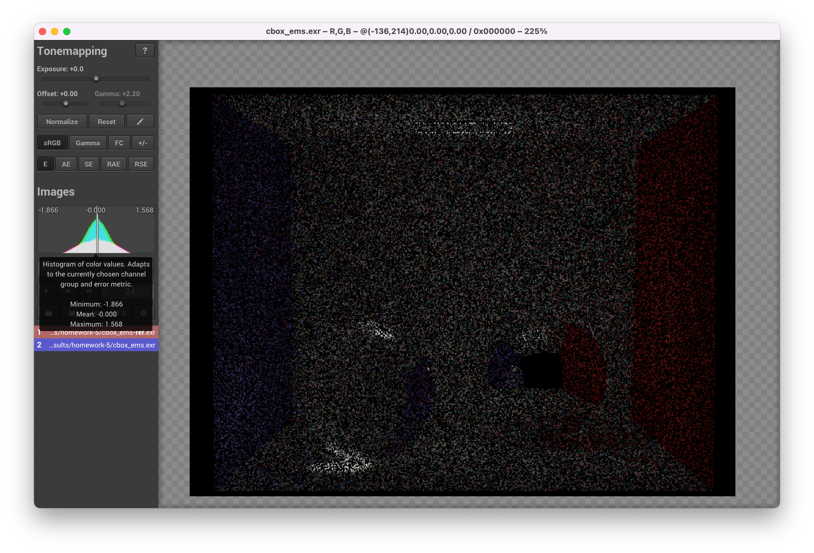

**Homework 5**
Student name: Qiyuan Dong
Sciper number: 307612
Microfacet BRDF (30 points)
===========================
Evaluating the Microfacet BRDF
------------------------------
- `Color3f eval(const BSDFQueryRecord &bRec)`
1. Compute the halfway vector $w_h$
2. Check the visibility using $w_i$, $w_o$, $w_h$. Return the diffuse part if not visible
3. Compute the Fresnel coefficient
4. Compute the corresponding pdf of this $w_h$
5. Return the sum of diffuse part and dieletric microfacet part
~~~cpp
Color3f f = m_kd * INV_PI;
Vector3f wh = (bRec.wi + bRec.wo).normalized();
if (abs(bRec.wi.z()) < Epsilon || abs(bRec.wo.z()) < Epsilon ||
bRec.wi.dot(wh) / bRec.wi.z() <= 0 || bRec.wo.dot(wh) / bRec.wo.z() <= 0)
return f;
float Fr = fresnel(bRec.wi.dot(wh), m_extIOR, m_intIOR);
float D_wh = Warp::squareToBeckmannPdf(wh, m_alpha);
f += m_ks * D_wh * Fr * G1(bRec.wi, wh) * G1(bRec.wo, wh) /
(4 * bRec.wi.z() * bRec.wo.z() * wh.z());
return f;
~~~
Sampling the Microfacet BRDF
------------------------------
- `Color3f sample(BSDFQueryRecord &bRec, const Point2f &_sample)`
1. Return `Color3f(0.f)` if the incident direction is below the plane
2. Use one sample to decide between a diffuse event and a microfacet specular event
3. Reuse the above sample by rescaling in both cases
4. If choose a microfacet specular evert
- Given $\alpha$, sample a halfway vector $w_h$ using the previously implemented Beckmann sampling method
- Compute the exit direction $w_o$ using $w_i$ and $w_h$ and save it to the BSDF record
5. If choose a diffuse evert
- Sample a exit direction $w_o$ using the previously implemented Hemisphere sampling method
6. Return `Color3f(0.f)` if the exit direction is below the plane
7. Return the BRDF value divided by the solid angle density and multiplied by the cosine factor
~~~cpp
if (bRec.wi.z() <= 0)
return Color3f(0, 0, 0);
Point2f sample(_sample);
if (_sample[0] < m_ks) { // Specular
sample[0] = sample[0] / m_ks;
Vector3f wh = Warp::squareToBeckmann(sample, m_alpha);
bRec.wo = (2.0f * wh.dot(bRec.wi) * wh - bRec.wi).normalized();
} else { // Diffuse
sample[0] = (sample[0] - m_ks) / (1.0f - m_ks);
bRec.wo = Warp::squareToCosineHemisphere(sample);
}
bRec.measure = ESolidAngle;
bRec.eta = 1.0f;
if (bRec.wo.z() < 0.0f)
return Color3f(0.0);
return eval(bRec) * Frame::cosTheta(bRec.wo) / pdf(bRec);
~~~
- `float pdf(const BSDFQueryRecord &bRec)`
1. Return 0.f if the measurement is not in soild angle or any direction is below the plane
2. Compute the halfway vector $w_h$
3. Compute the pdf following the density function
~~~cpp
if (bRec.measure != ESolidAngle || Frame::cosTheta(bRec.wi) <= 0
|| Frame::cosTheta(bRec.wo) <= 0)
return 0.0f;
Vector3f wh = (bRec.wi + bRec.wo).normalized();
return m_ks * Warp::squareToBeckmannPdf(wh, m_alpha) / (4 * wh.dot(bRec.wo)) +
(1 - m_ks) * INV_PI * bRec.wo.z();
~~~
Validation
----------
### Statistical tests
- The implementation passed all statistical tests
- chi2test-microfacet.xml
- Passed 15/15 tests
- ttest-microfacet.xml
- Passed 5/5 tests
### Renderings comparison
Ajax (smooth):
Ajax (rough):
### Error between ajax-smooth.exr and ajax-smooth-ref.exr
- Error between the two images is almost invisible
- The mean error is 0.000
- As indicated by the histogram and statistics, the error should be due to the randomness of the rendering algorithm
### Error between ajax-rough.exr and ajax-rough-ref.exr
- Error between the two images is almost invisible
- The mean error is 0.000
- As indicated by the histogram and statistics, the error should be due to the randomness of the rendering algorithm
Brute force path tracer (15 points)
===================================
- `Color3f Li(const Scene *scene, Sampler *sampler, const Ray3f &ray)`
1. Within each loop, first try to find the intersection. Break the loop if no intersection is found.
2. Adding the contribution from current intersection point if it is an emitter
3. Update stop probability using the provided heuristic
4. Using Russian Roulette to decide to continue or terminate
5. If continue the path tracing,
- Sample the BSDF of the intersection point to get a new direction
- Update the path throughput by multiplying the BSDF value and update eta which is the product of all $\eta$ terms encountered along the path
- Early terminate the path tracing if BSDF value is zero
6. If terminate the path tracing,
- Return `li` which is the accumulated contribution from all the emitters along the path
~~~cpp
Color3f li(0.f), throughput(1.f);
float eta = 1.000277f, prev_eta = 1.000277f, continue_p = 1.f; // start with the eta of air
int depth = 1;
Point3f prev_p = ray.o;
BSDFQueryRecord bRec(Vector3f(0.f));
Intersection its;
while (true) {
// Find intersection
if (depth == 1 && !scene->rayIntersect(ray, its))
break;
else if (!scene->rayIntersect(Ray3f(its.p, its.toWorld(bRec.wo)), its))
break;
// Aggregate the contribution from current intersection point if it is an emitter
if (its.mesh->isEmitter())
li += throughput *
its.mesh->getEmitter()->le(its.p, its.shFrame.n, (prev_p - its.p).normalized());
// Update stop probability
continue_p = throughput.maxCoeff() * eta * eta;
continue_p = continue_p < 0.99f ? continue_p : 0.99f;
// Using Russian Roulette after ROULETTE_START_DEPTH
if (depth >= ROULETTE_START_DEPTH) {
if (sampler->next1D() > continue_p)
break;
else
throughput /= continue_p;
}
// Sample the BSDF to get a new direction
bRec.wi = its.shFrame.toLocal((prev_p - its.p).normalized());
Color3f bsdfVal = its.mesh->getBSDF()->sample(bRec, sampler->next2D());
if (bsdfVal.maxCoeff() == 0.f) break; // stop if sampling failed
// Update eta and throughput
prev_eta /= bRec.eta;
eta *= prev_eta;
throughput *= bsdfVal;
prev_p = its.p;
++depth;
}
return li;
~~~
Validation
----------
### Statistical tests
- The implementation passed all statistical tests
- test-direct.xml
- Passed 15/15 tests
- test-furnace.xml
- Passed 5/5 tests
### Renderings comparison
Cornell box:
Veach material test scene:
Table test scene:
### Error between cbox_mats.exr and cbox_mats-ref.exr
- Error between the two images is almost invisible
- The mean error is 0.000
- As indicated by the histogram and statistics, the error should be due to the randomness of the rendering algorithm
### Error between veach_mats.exr and veach_mats-ref.exr
- Error between the two images is almost invisible
- The mean error is 0.000
- As indicated by the histogram and statistics, the error should be due to the randomness of the rendering algorithm
### Error between table_mats.exr and table_mats-ref.exr
- Error between the two images is almost invisible
- The mean error is 0.000
- As indicated by the histogram and statistics, the error should be due to the randomness of the rendering algorithm
Path tracer with next event estimation (25 points)
==================================================
- `Color3f Li(const Scene *scene, Sampler *sampler, const Ray3f &ray)`
- The implementation of path tracer with next event estimation is similar to the previous brute force one with the following differences
- When an emitter is found along on the path, its emitted radiance is considered only if the previous bounce is specular
- For each intersection found along the path, the direct illumination it received from emitters is included in `li`
- Such direct illumination is computed in the same way as previous assignment, where an emitter is uniformly sampled from the scene, and a point on the associated mesh is sampled uniformly over its surface area
~~~cpp
// Calculate the L_e contribution of current intersection point if it is an emitter
Vector3f wo = (prev_p - its.p).normalized();
if (its.mesh->isEmitter() && specular_bounce)
li += throughput * its.mesh->getEmitter()->le(its.p, its.shFrame.n, wo);
// Calculate the L_d contribution of current intersection (direct illumination)
li += throughput * Ld(scene, sampler, its, wo);
~~~
Validation
----------
### Statistical tests
- The implementation passed all statistical tests
- test-direct.xml
- Passed 15/15 tests
- test-furnace.xml
- Passed 5/5 tests
### Renderings comparison
Cornell box:
Veach material test scene:
Table test scene:
### Error between cbox_ems.exr and cbox_mats-ems.exr
- Error between the two images is almost invisible
- The mean error is 0.000
- As indicated by the histogram and statistics, the error should be due to the randomness of the rendering algorithm

### Error between veach_ems.exr and veach_ems-ref.exr
- Error between the two images is almost invisible
- The mean error is 0.001
- As indicated by the histogram and statistics, the error should be due to the randomness of the rendering algorithm
### Error between table_ems.exr and table_ems-ref.exr
- Error between the two images is almost invisible
- The mean error is 0.000
- As indicated by the histogram and statistics, the error should be due to the randomness of the rendering algorithm
Path tracer with Multiple Importance Sampling (30 points)
=========================================================
- `Color3f Li(const Scene *scene, Sampler *sampler, const Ray3f &ray)`
- The implementation of path tracer with Multiple Importance Sampling is based on path tracer with next event estimation.
- The main difference is that the calculation of the direct illumination is divided into two parts
- Emitter sampling with MIS
- Similar to the next event estimation, but the contribution of the light source sample now is weighted by also considering the BSDF sampling probability density
- BSDF sampling with MIS
- If the new direction from BSDF sampling arrives on an emitter, the emitted radiance from this emitter is combined with the previous mentioned part to be the complete direct illumination term.
- The contribution of the BSDF sample is weighted by also considering the emitter sampling probability density
- In the computation of the balance heuristic for the above two terms, all probability densities are expressed in solid angle.
~~~cpp
// compute emitter MIS weight
float pdf_bsdf = its.mesh->getBSDF()->pdf(bRec); // wrt solid angle
float pdf_light = em->pdfLi(its.p, its.shFrame.n, p, n); // wrt solid angle
pdf_light /= scene->getEmittersSize(); // the probability to sample an emitter
if (pdf_light + pdf_bsdf <= 0.f)
return 0.f;
else
return bsdfVal * l_i * pdf_light / (pdf_light + pdf_bsdf);
~~~
~~~cpp
// new direction hit an emitter, calculate the direct illumination at its via BSDF MIS
if (next_its.mesh->isEmitter()) {
float pdf_bsdf, pdf_light;
pdf_bsdf = its.mesh->getBSDF()->pdf(bRec); // wrt. solid angle
pdf_light = next_its.mesh->getEmitter()->pdfLi(its.p, its.shFrame.n, next_its.p, next_its.shFrame.n); // wrt solid angle
pdf_light /= scene->getEmittersSize(); // the probability to sample an emitter
if (pdf_light + pdf_bsdf <= 0.f)
li += 0.f;
else
li += throughput * pdf_bsdf / (pdf_light + pdf_bsdf) * next_its.mesh->getEmitter()->le(next_its.p, next_its.shFrame.n, (its.p - next_its.p).normalized());
}
~~~
Validation
----------
### Statistical tests
- The implementation passed all statistical tests
- test-direct.xml
- Passed 15/15 tests
- test-furnace.xml
- Passed 5/5 tests
### Renderings comparison
Cornell box:
Veach material test scene:
Table test scene:
### Error between cbox_mis.exr and cbox_mis-ems.exr
- Error between the two images is almost invisible
- The mean error is 0.000
- As indicated by the histogram and statistics, the error should be due to the randomness of the rendering algorithm
### Error between veach_mis.exr and veach_mis-ref.exr
- Error between the two images is almost invisible
- The mean error is 0.000
- As indicated by the histogram and statistics, the error should be due to the randomness of the rendering algorithm
### Error between table_mis.exr and table_mis-ref.exr
- Error between the two images is almost invisible
- The mean error is 0.000
- As indicated by the histogram and statistics, the error should be due to the randomness of the rendering algorithm
Artist Points: Interesting scene (5 points)
=========================================================
- The following scene *EPFL in a desert* was rendered with the path tracing with MIS renderer just implemented is this assignment. The model used in this scene are from https://www.emirage.org/2014/03/12/free-download-aerial-cityscape-v1-0/
- The emitter of this scene is an image based light source.
- The `.xml` file and mesh files are under `scene/pa5/artistpoint`
Hacker Points (20 points)
=========================================================
## Discussion of the implementation
- My implementation is basically based on the paper *Microfacet Models for Refraction through Rough Surfaces* and takes reference from the pbrt MicrofacetTransmission class.
- It is composed of two files
- warp.cpp
- microfacet-hacker.cpp
- warp.cpp
- `Vector3f Warp::squareToGGX(const Point2f &sample, float alpha)`
- The GGX sampling method
- Implementation follows equation 35 and 36 from the paper
- `float Warp::squareToGGXPdf(const Vector3f &m, float alpha) `
- The GGX probability density query method
- Implementation follows eq. 33
- microfacet-hacker.cpp
- `Color3f eval(const BSDFQueryRecord &bRec) const`
- This function receives a BSDF query record and computes the BRDF term and BTDF term respectively using `bRec.wi` and `bRec.wo`
- The returned BSDF value is the sum of the BRDF term and BTDF term
- The BRDF term is computed in the similar way as normal microfacet except that the distribution is replaced by the GGX
- The BTDF term is computed following the paper. It first computes the halfway vector given $w_i$ and $w_o$, then computes the shadowing term $G$, Fresnel term $F$, probability density $D$, and finally returns the BTDF term computed using the above terms according to the formula.
- `Color3f sample(BSDFQueryRecord &bRec, Sampler *sampler)`
- The algorithm first samples a halfway vector $w_h$ following the GGX distribution
- Given $w_h$ and $w_i$, it computes the Fresnel term and randomly chooses between reflection and transmission using the Fresnel term
- For either reflection or transmission, the scattered direction $w_o$ is computed from $w_i$ and $w_h$ using reflection law or transmission law
- The BSDF val can be computed by calling the above defined `eval()` method
- Given $w_i$ and $w_o$, the pdf for reflection and transmission can be computed by using their respective Jacobian of the half-direction transform and weighted using the Fresnel term
- The returned value is the BSDF value divided by the solid angle pdf and multiplied by the cosine factor
## Two refractive renderings of the Ajax
- alpha = 0.1
- alpha = 0.3
## Results of Chi^2 tests
- I modified the `warptest.cpp` to support the statistical test for GGX distribution
- alpha = 0.1